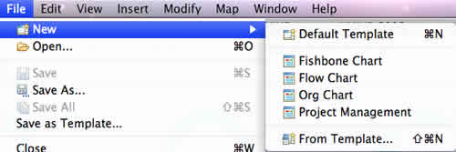

Template in XMind is a .XMT file. There are five prepared templates: default template, Fishbone chart, Flow chart, Org chart, and Project management. And you can build and save your own style templates. Here's how:
To use XMind's template with any manner following:
- Click the new icon on the toolbar, and select the template in the drop-down list.
- Choose 'File > New' on the menu, and select the template in the list.

To build your own template:
- Build a map with your personality:
- Topic style, such as font, shape, color.
- Line style, such as shape, color.
- Map style, such as wallpaper, background color, legend.
- Choose "File > Save as Template..." on the menu.
- Select the path and save your template.


You have two ways to open your own template(s):
- Choose "File > New > From Template...".
- Click "Ctrl+N" > Select "Mind Map Workbook from Template" > Click "Finish".
You may also be interested in...